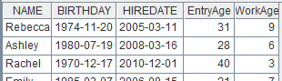
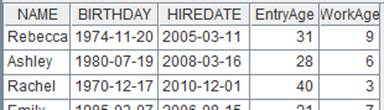

Description:
Add one or more fields to a cursor.
Syntax:
cs.derive(xi :Fi,…)
Note:
The function adds Fi,… field(s) to cursor cs to generate a new cursor consisting of the original fields and the new field(s) by traversing records of cs to assign each Fi with value xi. It supports multicursors.
Parameter:
|
cs |
Cursor |
|
Fi |
Field name. In this case, Fi cannot be of the same name as the existing fields in cs |
|
xi |
Expression, whose computed results are the field values |
Option:
|
@i |
Won’t generate a record if there is expression xi and its result is null (this won’t affect a record with null value in the original table sequence) |
Return value:
The original cursor cs
Example:
|
|
A |
|
|
1 |
=demo.cursor("select NAME,BIRTHDAY,HIREDATE from Employee") |
|
|
2 |
=A1.derive(interval@y(BIRTHDAY,HIREDATE):EntryAge, age(HIREDATE):WorkAge) |
Add fields EntryAge and WorkAge to the original cursor. |
|
3 |
=A2.fetch() |
 |
|
4 |
=file("D:\\txt_files\\data1.txt").cursor@t() |
Below is the file data1.txt:  |
|
5 |
=A4.derive@i(SCORE:score_not_null) |
If the SCORE value is null, the corresponding record won’t be generated
|
|
6 |
=A5.fetch() |
|
Related functions: